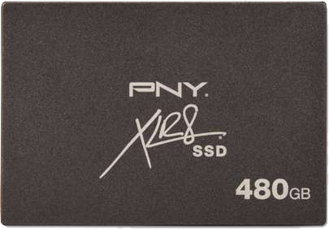
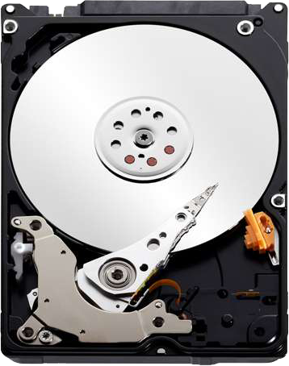

Crucial M500 Series 240GB SSD - 2.5" Form Factor, SATA III, Reads 500 MB/s,Writes 400 MB/s, Encryption Technology, Advanced Controller Technology, Adaptive Thermal Protection
Storage technology just got a whole lot better with this M500 SSD from Crucial. Backed up by 30 years of technological expertise, Crucial dedicates this solid state drive for consumers and professionals. Users will experience increased multitasking power, faster boot times, efficient data transfer speeds, and reliable data security. Complying with the standards set by TCG Opal, it is suitable for business use as it offers advanced encryption technology. It combines its own AES 256-bit hardware encryption engine with trusted applications like Wave® Systems’ EMBASSY® Trust suite or Microsoft® BitLocker. This SSD is consistently fast and efficient - it handles all types of data with same speed, whether it is compressed or uncompressed. It also delivers cool and quiet operation, which prolongs the lifespan of the device as well as your data. This 2.5" SSD guarantees a stable connection with your PC, and it offers sufficient space to hold up to 240GB of your files and documents. Its state-of-the-art Hardware-based Encryption technology enables full speed operations without the performance loss that’s typically found in software-based encryption. Thanks to its Adaptive Thermal Protection feature, it keeps the SSD evenly cool by dynamically adjusting power consumption based on usage demands. Plus, with its durable construction, this SSD can keep up with your daily business activities. Keep your customer's sensitive data private with this Crucial M500 2.5" SSD!
$149.99

PNY XLR8 480GB Solid State Drive - 480GB, 2.5", SATA III 6Gbps, up to 500MB/s Max Read, up to 450MB/s Max Write
Store tons of important files and documents with the ever-reliable PNY Solid State Drive. This 2.5" SSD provides your system with enough space to hold tons of photos, music, videos, and other multimedia files with its huge 480GB memory capacity. With its SATA III 6Gbps interface, this dependable storage device can easily be installed into your PC’s system. And with up to 450MB/sec write speed and up to 500MB/s read speed, you can share or transfer files within seconds. Storing huge amounts of files is a breeze with the PNY Solid State Drive.
$199.99

WD Re Datacenter 2 TB HDD for High Availability – 3.5" – SATA 3 Gb/s, 7200 RPM, 64MB Cache
The WD WD2003FYYS RE4 2TB Enterprise SATA Hard Drive is the ideal choice for servers, surveillance DVRs and other demanding storage tasks. The WD WD2003FYYS RE4 2TB Enterprise SATA Hard Drive includes plenty of features for securely storing your data. Offering a 2TB capacity, a 64MB cache and 7,200 RPM performance, this 3.5" SATA II HDD delivers excellent performance for write-intensive applications. Enhanced RAFF technology improves performance in high-vibration environments, while Dual actuator technology improves accuracy in positioning the head over the data tracks. StableTrac™ secures the motor at each end to prevent vibrations caused by the system, while stabilizing platters for precise tracking during read/write operations. RAID-specific TLER prevents drive fallout due to extended HDD error-recovery, and NoTouch™ ramp load technology means the recording heads never makes contact with the disk media to significantly reduce wear to the WD WD2003FYYS RE4 2TB Enterprise SATA Hard Drive.
$229.99
WD Blue 500 GB Desktop Hard Drive, Solid Performance for Everyday Computing - 3.5" - Sata 6 Gb/s, 7200RPM, 16MB Cache, 2yr Warranty
The WD Blue 500GB Desktop Hard Drive provides performance and reliability for everyday computing. It is built to the highest standards of quality and features a 500GB capacity at an affordable price. This hard drive has a SATA 6Gbps interface which increases airflow and offers less clutter in the computer system compared to PATA drives. Purchase the WD Blue 500GB Desktop Hard Drive today!